Stock check
Stock check / Stock correction plugin
|
|
Stock check / Stock correction - Manual - Shop - Licence: Once-off - Translations : Translations outstanding |

This "Stock correction" plugin allows users to perform inventory counts conveniently from various devices such as PCs, handheld PCs, or smartphones. This can be done either through Remote Desktop (RDP) or Terminal Services.
Upon pressing a Generate document button, the plugin automatically generates a credit note with the incorrect numbers. This feature helps in documenting discrepancies in stock counts. After the credit note is generated, the plugin proceeds to correct the stock numbers based on the inventory count performed. This ensures that the inventory records are accurate and up to date.
New Android Stock Count.
|
Android Stock Count - Manual - Shop - Licence: Once-off - |
The "New Android Stock Count" at an extra cost of 200,00 euros, excluding tax, allows users to connect to the plugin via their local network using an Android device. The Android version of the plugin supports barcode scanning functionality. Users can use a Bluetooth-enabled barcode scanner to scan barcodes of the stock items, which facilitates faster and more accurate stock counting.
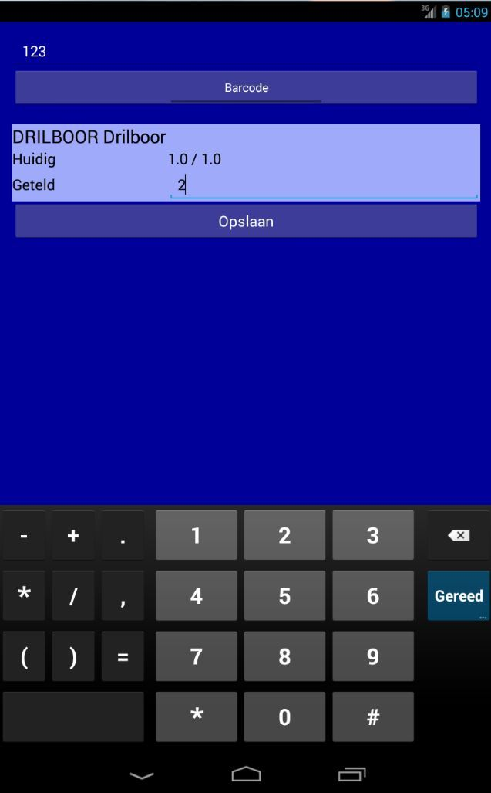
Activation
To activate the StockCheck plugin:
- On the Setup ribbon, go to Plugins → Stock plugins → StockCheck. If this plugin is not listed under Plugins → Stock plugins, activate it via Tools → Activate plugins.
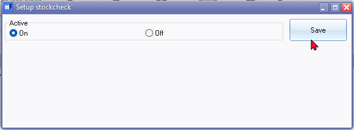
- In the Setup StockCheck, select On and click Save. Reopen the "Setup stockcheck" screen to change additional settings.
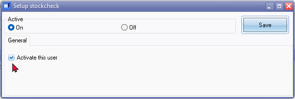
- If "Activate for this user" is selected,the StockCheck plugin will automatically launch when you reopen the Set of Books. To disable this and manually launch the StckCheck plugin, uncheck the "Activate for this user" field. You can then manually launch the StockCheck plugin from the StockCheck icon on the Default ribbon.
- Click Save. Reopen your Set of Books for these settings to take effect.
Default ribbon icon
Once you have reopened your Set of Books, the "Voorraad controle" StockCheck icon will be available on the Default ribbon.
- If "Activate for this user" is selected in the Setup StockCheck, the StockCheck plugin will automatically launch when you open your Set of Books.
- If "Activate for this user" is not selected, or if you have closed the StockCheck plugin, you can manually launch it from the "Voorraad controle" StockCheck icon on the Default ribbon.
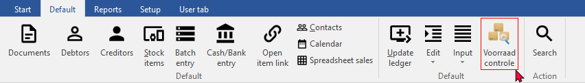
Stock check
List tab
Once you have accessed the StockCheck plugin, the List tab will be displayed.
- Click the Search button to list all your stock items (products). You may filter and search by options such as Reporting Group 1 (Stock Group 1) or Reporting Group 2 (Stock Group 2). For example, if you select "Powertools" as Reporting Group 1, the list will focus specifically on items linked to "Powertools."
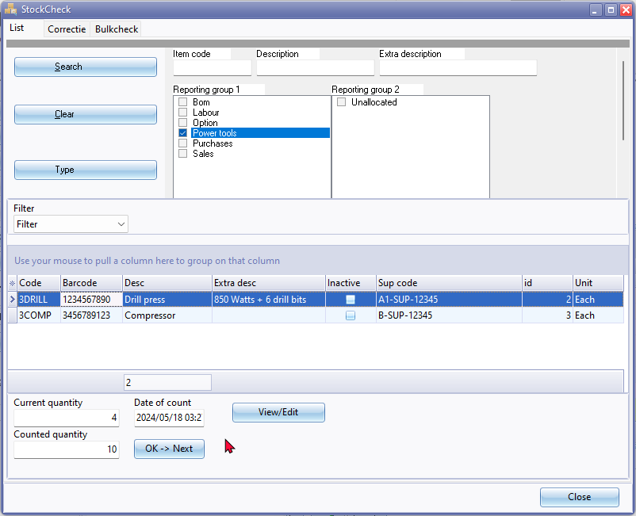
- Once your stock items are listed, you may use the following columns to sort and filter your list of stock items:
- Code: Stock code
- Barcode: Barcode of the stock item
- Description: Stock item description
- Extra Description: Additional description of the stock item
- Inactive: Status of the stock item (active or inactive)
- Supplier Code: Supplier's stock code (if set for the default supplier)
- ID: Stock item ID (record number)
- Unit: Unit description for purchase and sale
- Filter: You may choose to filter your items by Uncounted or Counted.
- For the selected stock item, the current quantity is displayed. In the Counted Quantity field, enter the quantity of the physical stock count. Click OK → Next to move to the next stock item.
- For each counted stock item, the Date of Count will include the timestamp of when the stock count was done.
- View/Edit button: To view a stock item, click the View/Edit button. This will open the Stock Item form with the Ledger tab in a separate window, allowing you to view and edit details if necessary.
Finally, once you have finished your stock count, you may proceed to process the corrections on the Correctie (Corrections) tab.
Correctie (Corrections) tab
Once you have finished your stock count on the List tab, you may proceed to process the corrections on the Correctie (Corrections) tab.
- To generate credit notes for your stock count, click the Genereer document (Generate document) button.
- The "Debtor accounts" screen will appear, allowing you to choose an account. If no account exists, you may create a new account, for example, a Stock Count account.
- The Debtor Accounts screen will appear
- A log will display the list of stock item codes and quantities ordered, followed by the message "Correction credit note Ready!"
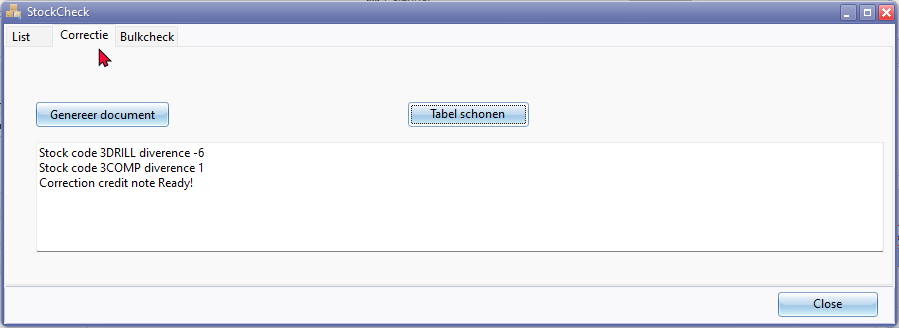
Example text for generated document:
Stock code 3DRILL diverence -6
Stock code 3COMP diverence 1
Correction credit note Ready!
Delete Stock Checks
- To clear the stock check table, click the Tabel schonen (Clear table) button.
- The following confirmation message will be displayed:
"Delete all stock checks? Warning this cannot be reversed!"
- If you are sure, click Yes.
Accessing generated Credit notes
Once the credit notes are generated:
- Navigate to Documents on the Default ribbon.
- Select "Credit note" as the document type. The generated credit notes will be listed as "Unposted" in the Documents grid.
Editing credit notes
You may need to edit the credit notes and change the details where necessary. Pay special attention to the following:
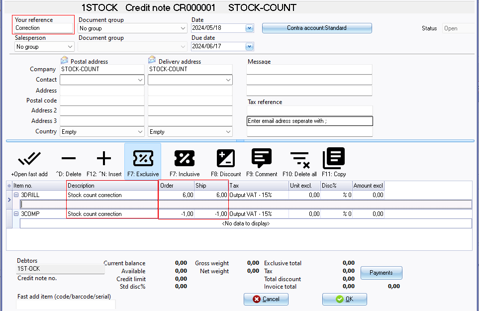
Document Header:
- Your Reference: "Correction" will be displayed.
- Document Group 1 / Document Group 2: Select the appropriate document groups.
- Salesperson: Select the salesperson or the person who handled the stock count.
- Date: The system date on which the credit note was generated.
- Message: Enter up to 3 lines if necessary.
Tip: If you need to change the Document Group 1 / Document Group 2, or the Salesperson, you may use the context menu on the Documents grid for the "Credit note" document type.
Document Lines:
- Stock Item: The stock code and stock item description will be displayed as "Stock count correction".
- Order / Ship: The quantity is the difference between the current quantity and the counted quantity. If the counted quantity is lower than the current quantity, the quantity will be negative (prefixed by a minus sign).
- Remarks and Comments: Add any remarks and comments if necessary.
- Discount: Add any discount if necessary.
Once you are satisfied with your generated credit notes, you may post or update these credit notes to the ledger.
Note: If the "Auto-post document on print" setting on the Documents setup in the Setup menu (accessible via the Setup ribbon) is not activated, or if you have not yet printed the document, you will need to manually post the Stock in and Stock out documents.
To Access the StockCheck Correction Documents
In addition to the filter and search options on the Documents grid for the credit note document type, you can also locate these credit note documents using the following options:
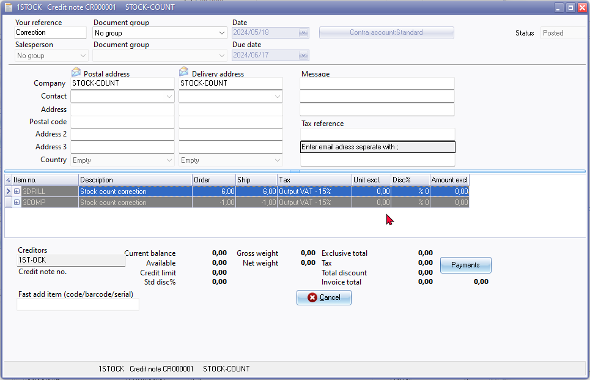
- Stock item form → Document groups tab: Use the context menu "Open document".
- Stock item form → Transactions tab: Use the context menu "Open document".
Printing options
Printing Options
In addition to the print options on the Documents grid for the credit note document type, you can also print documents using the following options:
- Debtor Form: Documents tab. Double-click. You may select a layout file. Note : If the document layout file "Layout file" is selected, it may will print the Stock code but the stock description as "Stock count correction". To include the Stock code, select the "Document layout (15 code)" layout file.
- Stock Item Form:
- Document Groups tab: Double-click the document.
- Transactions tab: Double-click the document.
- Search (Default ribbon): Use the central search to find the reference ("Correction") or description (e.g., "Stock count correction"). If you use prefixes for documents, such as "CR" for credit notes, it will be easier to locate these credit notes. Double-click on the document. The document type will be indicated as "Credit note Details".
StockCheck - Credit note transactions
When credit notes are generated using the StockCount / Stock correction plugin, an unposted credit note is created. When these credit notes are posted or updated to the ledger, the cost of sales journal will generate transactions. You have the following options to view these transactions:
Batch entry (Default ribbon)
- On the Default ribbon, select Batch Entry or press F2.
- Open the Cost of Sales journal and click on the Posted Batches tab.
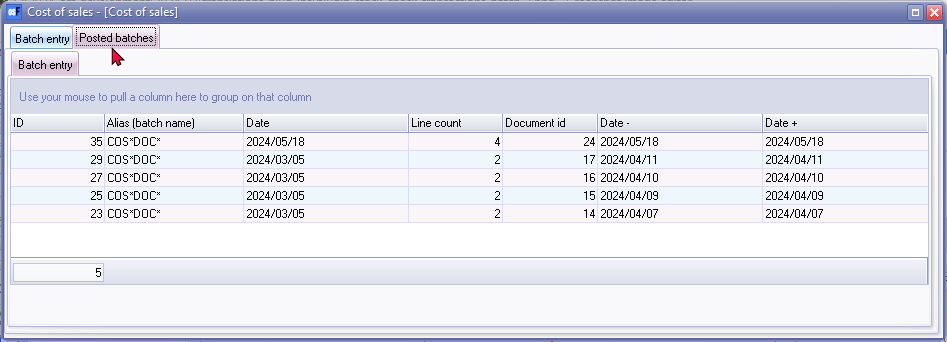
- In the Posted Batches - Batch entry tab, select the batch and double-click it. Note: The default alias batch name is "COSDOC". The list of transactions is displayed in the Details tab.
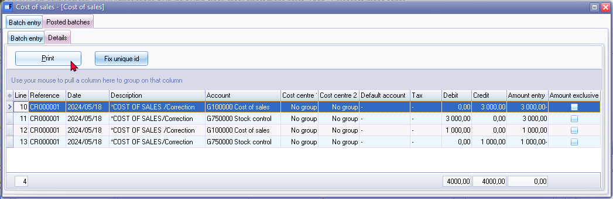
- On the Details tab, the reference will list the document number of the credit note, and the description of the transaction will be "*COST OF SALES / Correction".
- To print the "Batch Type - Posted Batch" report for the credit note transactions, click the Print button.
Example of the "Batch type - Posted batch" Report for Credit Note Transactions:
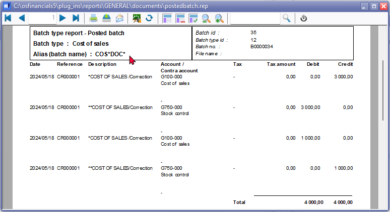
Debtor account - Documents tab
On the Documents tab of the debtor account, select the credit note and right-click to select "Show transactions" from the context menu.
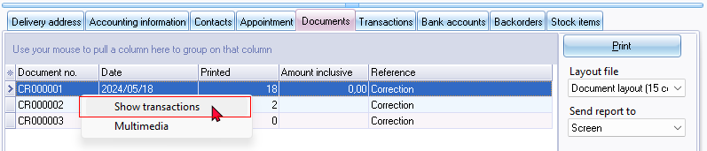
The transactions will be listed in the "Transactions" screen, which is similar to the Posted batches - Batch entry tab form the Batch entry option.

Note : Print button will produce a "No data to print!" error. To print the "Batch type - Posted batch" report for these credit note transactions, navigate to the Batch Entry or press F2. and open the Cost of Sales journal and click on the Posted Batches tab.
T-Account viewer
On the Reports ribbon, select Ledger analyser 1 or Ledger analyser 1 / 2. Generate a Trial balance or an Income statement. Select the Cost of sales account or the Stock control account and right-click to select "Show details" from the context menu. The T-account viewer will list all posted transactions for the selected account.
Select the credit note with a description "COST OF SALES / Correction" and double click on the Batch id generated by osFinancials.
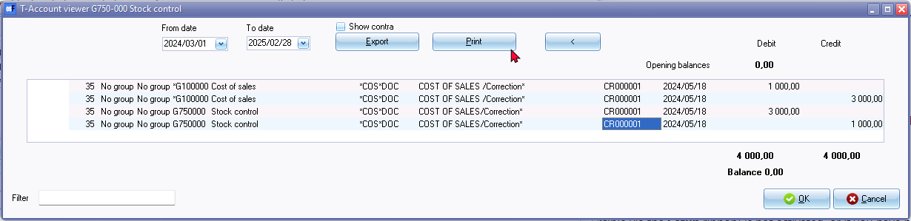
Click the Print button to print the transactions in the T-Account viewer.
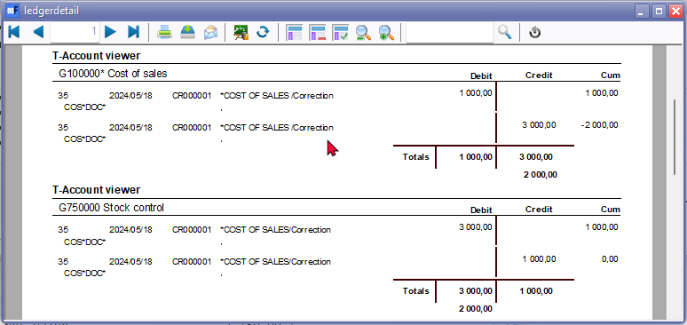
Bulkcheck tab
To be advised.
The Post difference button, generate blank credit notes with no adjustments or corrections on the unposted credit notes.
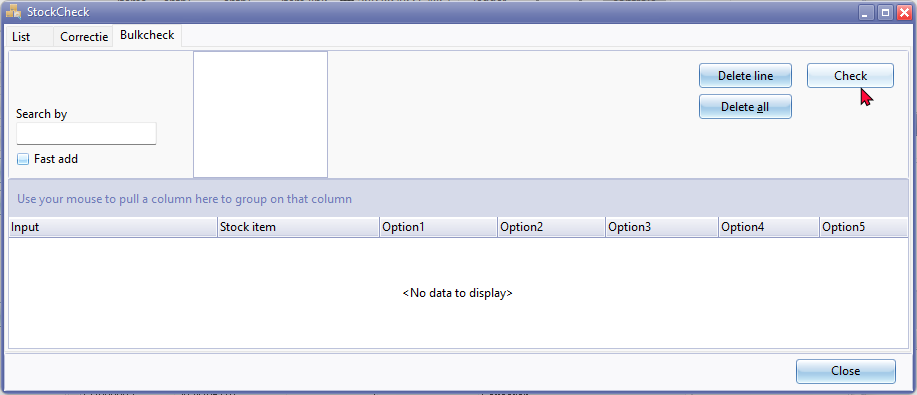
Delete line - No Confirmation message
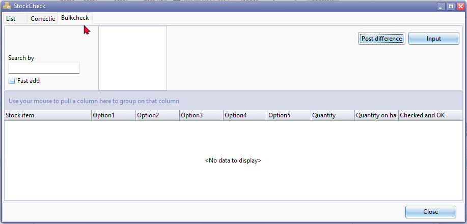
Confirmation message
There ao check active do you want to see this? No wil make a new check and all current check data will be lost!
Post difference log entry on Correctie tab
Correction credit note Done!
Confirmation message Post difference button.
Are you sure you want to post the new inventory data?
Post difference button - Access violation error on Bulk check tab
This is replicated by typing text, e.g. "Drill" and enter. The when click in the Check button or the Post difference button the Access violation error occurs.
violation of FOREIGN KEY constraint "FK_DOCLINE_STOCK" on table "DOCLINE"
Foreign key reference target does not exist
The Post difference button, generate blank credit notes with no adjustments or corrections on the unposted credit notes.
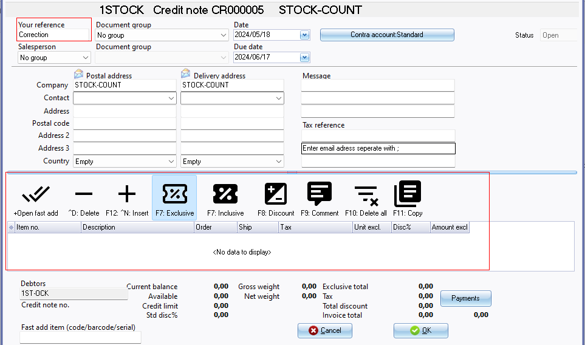